Matbiips example: Switching Stochastic volatility
In this example, we consider the Markov switching stochastic volatility model.
Reference: C.M. Carvalho and H.F. Lopes. Simulation-based sequential analysis of Markov switching stochastic volatility models. Computational Statistics and Data analysis (2007) 4526-4542.
Contents
Statistical model
Let 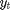 be the response variable and 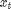 the unobserved log-volatility of . The stochastic volatility model is defined as follows for 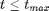
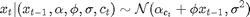
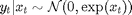
The regime variables 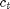 follow a two-state Markov process with transition probabilities
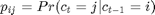
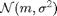 denotes the normal distribution of mean 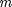 and variance 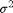.
Statistical model in BUGS language
Content of the file `switch_stoch_volatility.bug':
var y[t_max,1], x[t_max,1],mu[t_max,1],mu_true[t_max,1],c[t_max],c_true[t_max]
data
{
c_true[1] ~ dcat(pi[c0,])
mu_true[1,1] <- alpha[1,1] * (c[1]==1) + alpha[2,1]*(c[1]==2) + phi*x0
x_true[1,1] ~ dnorm(mu_true[1,1], 1/sigma^2)
y[1,1] ~ dnorm(0, exp(-x_true[1,1]))
for (t in 2:t_max)
{
c_true[t] ~ dcat(ifelse(c_true[t-1]==1,pi[1,],pi[2,]))
mu_true[t,1] <- alpha[1,1]*(c_true[t]==1) + alpha[2,1]*(c_true[t]==2) + phi*x_true[t-1,1];
x_true[t,1] ~ dnorm(mu_true[t,1], 1/sigma_true^2)
y[t,1] ~ dnorm(0, exp(-x_true[t,1])
}
} model
{
c[1] ~ dcat(pi[c0,])
mu[1,1] <- alpha[1,1] * (c[1]==1) + alpha[2,1]*(c[1]==2) + phi*x0
x[1,1] ~ dnorm(mu[1,1], 1/sigma^2)
y[1,1] ~ dnorm(0, exp(-x[1,1]))
for (t in 2:t_max)
{
c[t] ~ dcat(ifelse(c[t-1]==1, pi[1,], pi[2,]))
mu[t,1] <- alpha[1,1] * (c[t]==1) + alpha[2,1]*(c[t]==2) + phi*x[t-1,1]
x[t,1] ~ dnorm(mu[t,1], 1/sigma^2)
y[t,1] ~ dnorm(0, exp(-x[t,1]))
}
}set(0, 'DefaultAxesFontsize', 14) set(0, 'Defaultlinelinewidth', 2) rng('default')
Installation of Matbiips
Unzip the Matbiips archive in some folder and add the Matbiips folder to the Matlab path
matbiips_path = '../../matbiips/matlab';
addpath(matbiips_path)
Load model and data
Model parameters
sigma = .4;alpha = [-2.5; -1]; phi = .5; c0 = 1; x0 = 0; t_max = 100; pi = [.9, .1; .1, .9]; data = struct('t_max', t_max, 'sigma', sigma,... 'alpha', alpha, 'phi', phi, 'pi', pi, 'c0', c0, 'x0', x0); % Start Biips console biips_init; % Parse and compile BUGS model, and sample data model_filename = 'switch_stoch_volatility.bug'; % BUGS model filename [model, data] = biips_model(model_filename, data, 'sample_data', true);
* Parsing model in: switch_stoch_volatility.bug * Compiling data graph Declaring variables Resolving undeclared variables Allocating nodes Graph size: 1215 Sampling data Reading data back into data table * Compiling model graph Declaring variables Resolving undeclared variables Allocating nodes Graph size: 1218
BiiPS Sequential Monte Carlo
Run SMC
n_part = 5000; % Number of particles variables = {'x'}; % Variables to be monitored out_smc = biips_smc_samples(model, variables, n_part);
* Assigning node samplers * Running SMC forward sampler with 5000 particles |--------------------------------------------------| 100% |**************************************************| 100 iterations in 10.20 s
Diagnostic on the algorithm.
diag = biips_diagnostic(out_smc);
* Diagnosing variable: x Filtering (f) diagnostic: GOOD Smoothing (s) diagnostic: GOOD
Plot ESS
figure('name', 'ESS') semilogy(out_smc.x.s.ess) hold on plot(1:t_max, 30*ones(t_max,1), '--k') xlabel('Time') ylabel('SESS') box off legend('Effective sample size (smoothing)') legend boxoff saveas(gca, 'volatility_ess', 'png') % pause

Plot weighted particles
figure('name', 'Particles') hold on for t=1:t_max val = unique(out_smc.x.s.values(t,:,:)); for j=1:length(val) ind = out_smc.x.s.values(t,:,:)==val(j); weight(j) = sum(out_smc.x.s.weights(t,:,ind)); plot(t, val(j), 'ro',... 'markersize', min(7, n_part/10* weight(j)),'markerfacecolor', 'r') end end xlabel('Time') ylabel('Particles (smoothing)') saveas(gca, 'volatility_particles_s', 'png')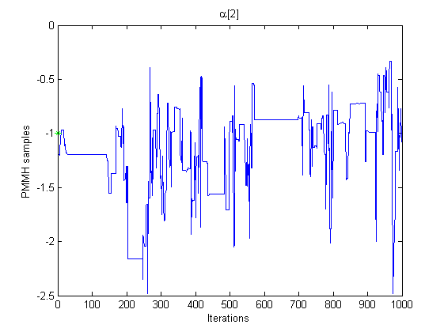
Summary statistics
summary = biips_summary(out_smc, 'probs', [.025, .975]);
Plot Filtering estimates
x_f_mean = summary.x.f.mean; x_f_med = summary.x.f.med; x_f_quant = summary.x.f.quant; figure('name', 'SMC: Filtering estimates') h = fill([1:t_max, t_max:-1:1], [x_f_quant(1,:), fliplr(x_f_quant(2,:))],... [.7 .7 1]); set(h, 'edgecolor', 'none') hold on plot(x_f_mean, 'linewidth', 3) xlabel('Time') ylabel('Estimates') legend({'95 % credible interval', 'Filtering Mean Estimate'}) legend('boxoff') box off ylim([-8,0]) saveas(gca, 'volatility_f', 'epsc2')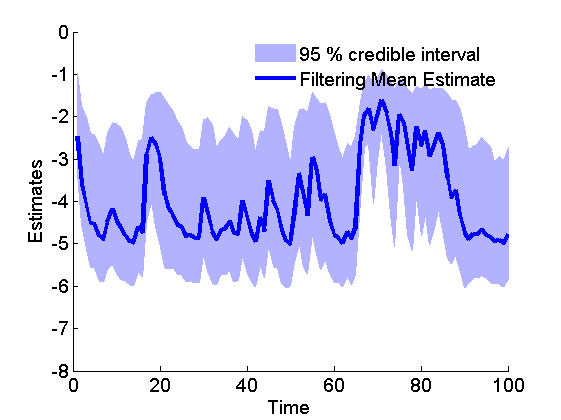
Plot Smoothing estimates
x_s_mean = summary.x.s.mean; x_s_quant = summary.x.s.quant; figure('name', 'SMC: Smoothing estimates') h = fill([1:t_max, t_max:-1:1], [x_s_quant(1,:), fliplr(x_s_quant(2,:))],... [.7 .7 1]); set(h, 'edgecolor', 'none') hold on plot(x_s_mean, 'linewidth', 3) xlabel('Time') ylabel('Estimates') legend({'95 % credible interval', 'Smoothing Mean Estimate'}) legend('boxoff') box off ylim([-8,0]) saveas(gca, 'volatility_s', 'epsc2')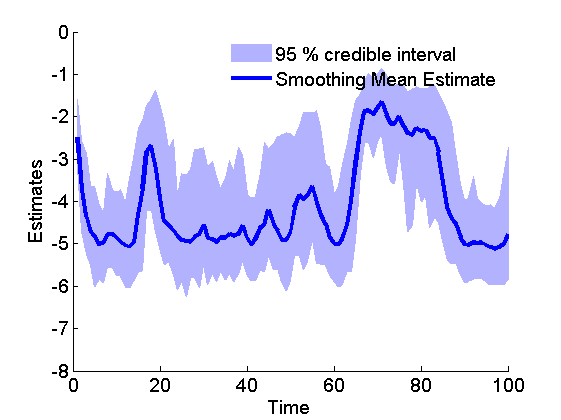
Marginal filtering and smoothing densities
kde_estimates = biips_density(out_smc); time_index = [5, 10, 15]; figure('name', 'SMC: Marginal posteriors') for k=1:length(time_index) tk = time_index(k); subplot(2, 2, k) plot(kde_estimates.x.f(tk).x, kde_estimates.x.f(tk).f, '--'); hold on plot(kde_estimates.x.s(tk).x, kde_estimates.x.s(tk).f, 'r'); plot(data.x_true(tk), 0, '*g'); xlabel(['x_{' num2str(tk) '}']); ylabel('posterior density'); title(['t=', num2str(tk)]); end h =legend({'filtering density', 'smoothing density', 'True value'}); set(h, 'position',[0.7 0.25, .1, .1]) legend('boxoff') saveas(gca, 'volatility_kde', 'epsc2')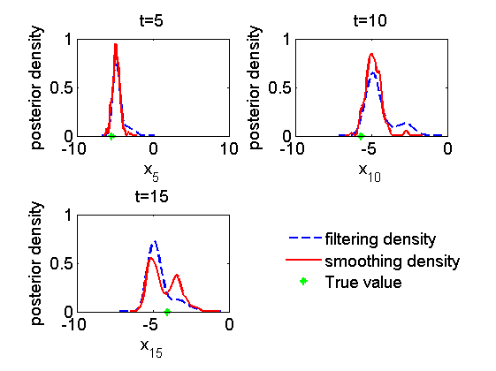
BiiPS Particle Independent Metropolis-Hastings
Parameters of the PIMH
n_burn = 10000; n_iter = 10000; thin = 1; n_part = 50;
Run PIMH
obj_pimh = biips_pimh_init(model, variables); obj_pimh = biips_pimh_update(obj_pimh, n_burn, n_part); % burn-in iterations [obj_pimh, out_pimh, log_marg_like_pimh] = biips_pimh_samples(obj_pimh,... n_iter, n_part, 'thin', thin);
* Initializing PIMH * Updating PIMH with 50 particles and 10000 iterations |--------------------------------------------------| 100% |**************************************************| 10000 iterations in 791.00 s * Generating PIMH samples with 50 particles and 10000 iterations |--------------------------------------------------| 100% |**************************************************| 10000 iterations in 812.77 s
Some summary statistics
summary_pimh = biips_summary(out_pimh, 'probs', [.025, .975]);
Posterior mean and quantiles
x_pimh_mean = summary_pimh.x.mean; x_pimh_quant = summary_pimh.x.quant; figure('name', 'PIMH: Posterior mean and quantiles') h = fill([1:t_max, t_max:-1:1], [x_pimh_quant(1,:), fliplr(x_pimh_quant(2,:))],... [.7 .7 1]); set(h, 'edgecolor', 'none') hold on plot(x_pimh_mean, 'linewidth', 3) xlabel('Time') ylabel('Estimates') legend({'95 % credible interval', 'PIMH Mean Estimate'}) legend('boxoff') box off saveas(gca, 'volatility_pimh_s', 'epsc2')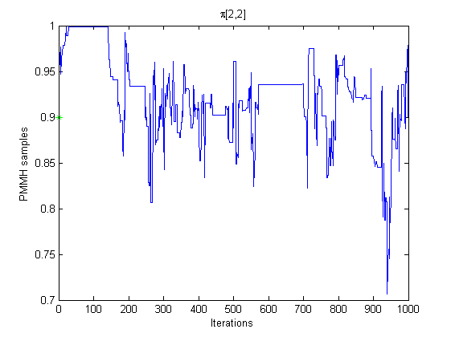
Trace of MCMC samples
time_index = [5, 10, 15]; figure('name', 'PIMH: Trace samples') for k=1:length(time_index) tk = time_index(k); subplot(2, 2, k) plot(out_pimh.x(tk, :)) hold on plot(0, data.x_true(tk), '*g'); xlabel('Iterations') ylabel('PIMH samples') title(['t=', num2str(tk)]); end h = legend({'PIMH samples', 'True value'}); set(h, 'position',[0.7 0.25, .1, .1]) legend('boxoff')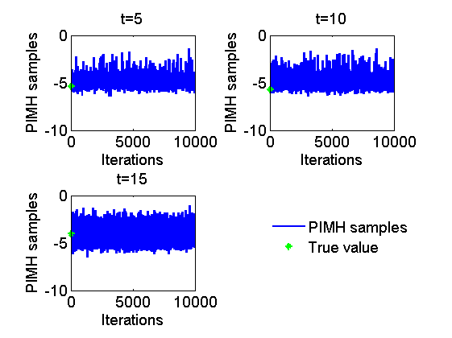
Histograms of posteriors
figure('name', 'PIMH: Histograms Marginal Posteriors') for k=1:length(time_index) tk = time_index(k); subplot(2, 2, k) hist(out_pimh.x(tk, :), 20); hold on plot(data.x_true(tk), 0, '*g'); xlabel(['x_{' num2str(tk) '}']); ylabel('number of samples'); title(['t=', num2str(tk)]); end h =legend({'PIMH samples', 'True value'}); set(h, 'position',[0.7 0.25, .1, .1]) legend('boxoff')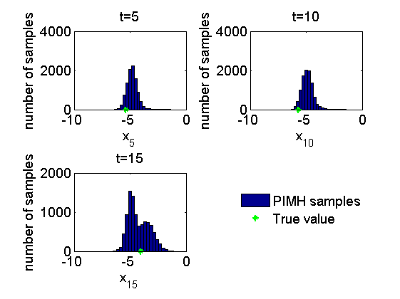
Kernel density estimates of posteriors
kde_estimates_pimh = biips_density(out_pimh); figure('name', 'PIMH: KDE estimates Marginal posteriors') for k=1:length(time_index) tk = time_index(k); subplot(2, 2, k) plot(kde_estimates_pimh.x(tk).x, kde_estimates_pimh.x(tk).f); hold on plot(data.x_true(tk), 0, '*g'); xlabel(['x_{' num2str(tk) '}']); ylabel('posterior density'); title(['t=', num2str(tk)]); end h = legend({'posterior density', 'True value'}); set(h, 'position',[0.7 0.25, .1, .1]) legend('boxoff') saveas(gca, 'volatility_pimh_kde', 'epsc2')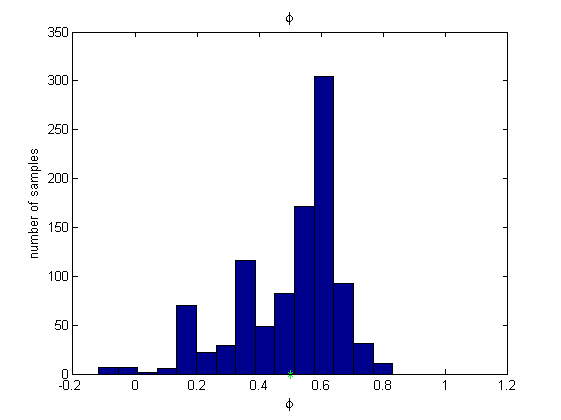
BiiPS Sensitivity analysis
Parameters of the algorithm.
n_part = 50; % Number of particles param_names = {'alpha[1:2,1]'}; % Parameter for which we want to study sensitivity [A, B] = meshgrid(-5:.2:2, -5:.2:2); param_values = {[A(:), B(:)]'}; % Range of values
Run sensitivity analysis with SMC
out_sensitivity = biips_smc_sensitivity(model, param_names, param_values, n_part);
* Analyzing sensitivity with 50 particles |--------------------------------------------------| 100% |**************************************************| 1296 iterations in 101.73 s
Plot log-marginal likelihood and penalized log-marginal likelihood
figure('name', 'Sensitivity: log-likelihood') surf(A, B, reshape(out_sensitivity.log_marg_like, size(A))) shading interp caxis([0,max(out_sensitivity.log_marg_like(:))]) colormap(hot) view(2) xlim([min(A(:)), max(A(:))]) colorbar xlabel('$\alpha_1$', 'interpreter', 'latex', 'fontsize', 20) ylabel('$\alpha_2$', 'interpreter', 'latex', 'fontsize', 20) saveas(gca, 'volatility_sensitivity', 'epsc2') saveas(gca, 'volatility_sensitivity', 'png')

Clear model
biips_clear(model)